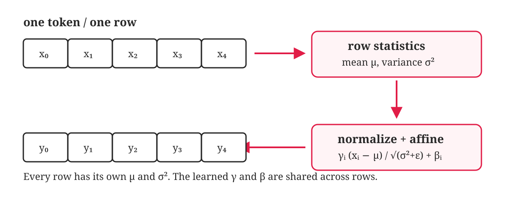
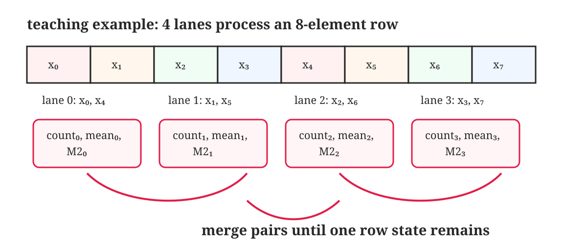
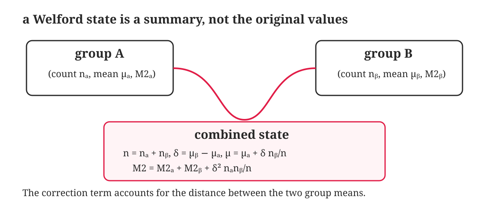
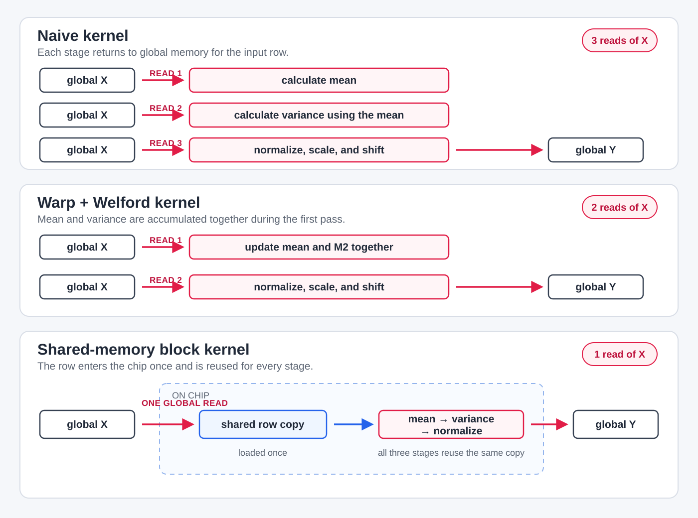

3 LayerNorm
The code for this chapter lives in kernels/layernorm/.
During a transformer’s forward pass, activation magnitudes can grow or shrink as they pass through many attention and feed-forward layers. If their scale drifts too far, training becomes unstable and gradients can explode or vanish.
Layer normalization, or LayerNorm, controls this by normalizing the features of each token before passing them farther through the transformer.
This is different from BatchNorm. BatchNorm calculates its statistics for one feature across different examples in a batch. LayerNorm calculates its statistics across all the features of one token. Therefore, LayerNorm handles each token independently and does not depend on the batch size.
Assume that our input is a matrix \(\mathbf{X}\in\mathbb{R}^{M\times N}\). Each row is the hidden state of one token, and its \(N\) columns are the features of that hidden state. For row \(r\), the mean is
\[ \mu_r=\frac{1}{N}\sum_{j=0}^{N-1}X_{r,j}, \]
and the variance is
\[ \sigma_r^2 =\frac{1}{N}\sum_{j=0}^{N-1}(X_{r,j}-\mu_r)^2. \]
We first standardize each element using these statistics. Then we apply a learned scale \(\gamma_j\) and shift \(\beta_j\):
\[ Y_{r,j} =\gamma_j \frac{X_{r,j}-\mu_r}{\sqrt{\sigma_r^2+\epsilon}} +\beta_j. \]
The small value \(\epsilon\) prevents a division by zero when every element in a row is equal. The vectors \(\boldsymbol{\gamma}\) and \(\boldsymbol{\beta}\) each contain \(N\) values. They are shared by every row, while every row gets its own \(\mu_r\) and \(\sigma_r^2\).
Before thinking about CUDA, let us write down the complete calculation:
for each row in X:
sum = 0
for each value in row:
sum += value
mean = sum / N
squared_difference = 0
for each value in row:
difference = value - mean
squared_difference += difference * difference
variance = squared_difference / N
reciprocal_std = 1 / sqrt(variance + epsilon)
for column = 0 to N - 1:
normalized = (row[column] - mean) * reciprocal_std
output[column] = normalized * gamma[column] + beta[column]
So LayerNorm first calculates the row mean, uses that mean to calculate the variance, and finally normalizes each feature before applying the learned scale and shift. Let us now map these three steps to the simplest CUDA kernel.
3.1 One thread per row
Let us start with the most direct CUDA mapping. We give one row to one thread:
thread 0 -> row 0
thread 1 -> row 1
thread 2 -> row 2
...This is a direct mapping of the pseudocode we just wrote. Every thread performs the three loops for its assigned row, while different rows are processed in parallel.
Different rows run in parallel, but everything inside one row is still serial. Before changing the mapping, let us count what this kernel does.
3.1.1 Computation
For one row, the mean pass performs \(N-1\) additions and one division:
\[ (N-1)+1=N \quad \text{FLOPs}. \]
The variance pass performs \(N\) subtractions, \(N\) multiplications, \(N-1\) additions, and one division:
\[ N+N+(N-1)+1=3N \quad \text{FLOPs}. \]
The final pass performs one subtraction, two multiplications, and one addition per element:
\[ 4N \quad \text{FLOPs}. \]
Adding \(\epsilon\) before rsqrtf contributes one more addition per row. The ordinary floating-point work is therefore
\[ N+3N+4N+1=8N+1 \quad \text{FLOPs per row}, \]
or
\[ M(8N+1)=8MN+M \quad \text{FLOPs for the matrix}. \]
We also evaluate rsqrtf once per row. Like the exponential in our Softmax worklog, reciprocal square root is a special function rather than one ordinary FLOP, so we track it separately instead of pretending it has a universal cost.
3.1.2 Memory access
Assume FP32, so every element occupies 4 bytes. The naive algorithm reads \(\mathbf{X}\) three times. During the final pass, it also reads one value from \(\boldsymbol{\gamma}\) and one from \(\boldsymbol{\beta}\) for every output element, then writes that output.
| Operation | Elements transferred | Bytes transferred |
|---|---|---|
| Read \(\mathbf{X}\) for the mean | \(MN\) | \(4MN\) |
| Read \(\mathbf{X}\) for the variance | \(MN\) | \(4MN\) |
| Read \(\mathbf{X}\) for normalization | \(MN\) | \(4MN\) |
| Read \(\boldsymbol{\gamma}\) | \(MN\) | \(4MN\) |
| Read \(\boldsymbol{\beta}\) | \(MN\) | \(4MN\) |
| Write \(\mathbf{Y}\) | \(MN\) | \(4MN\) |
| Total | \(6MN\) | \(24MN\) |
Using the ordinary floating-point operations we counted above, the arithmetic intensity is
\[ \begin{aligned} AI_{\text{naive}}(M,N) &=\frac{8MN+M}{24MN} \\ &=\frac{8N+1}{24N} \quad \text{FLOPs/byte}. \end{aligned} \]
For a large \(N\),
\[ AI_{\text{naive}}(M,N) \approx\frac{8MN}{24MN} =\frac{1}{3} \approx0.333\ \text{FLOPs/byte}. \]
So LayerNorm performs roughly one ordinary floating-point operation for every 3 bytes transferred. This is a low arithmetic intensity, which means memory traffic is going to matter a lot.
Every row uses the same \(\gamma\) and \(\beta\) vectors, so the GPU may serve many of those reads from cache instead of going back to DRAM every time. We still count the reads performed by the kernel here. This gives us one consistent model for comparing our own implementations without assuming a particular cache hit rate.
There are two problems hiding inside this simple implementation:
We read the input row three times. The mean pass, variance pass, and normalization pass each fetch every element of \(\mathbf{X}\).
One thread owns one complete row. The work inside that row is serial, and neighboring threads in a warp read from different rows instead of adjacent columns.
Let us handle these problems one at a time. We will first remove one input pass without changing which thread owns the row. After that, we will change the thread mapping and make the memory access coalesced.
3.2 Removing one pass over the row
The separate mean and variance loops are the first target. We cannot calculate \((x_i-\mu)^2\) until we know \(\mu\), which makes the second pass look unavoidable. But there are ways to update the mean and variance while the row is being read.
3.2.1 Why not use the sum of squares?
Expanding the variance equation gives us
\[ \sigma^2=E[x^2]-E[x]^2. \]
This means we could accumulate \(\sum x\) and \(\sum x^2\) together, then calculate
\[ \sigma^2 =\frac{\sum x^2}{N} -\left(\frac{\sum x}{N}\right)^2. \]
That would combine the mean and variance loops. The problem is floating-point precision. If the values are large but their variance is small, \(E[x^2]\) and \(E[x]^2\) are two large numbers that are almost equal. Subtracting them can discard the small difference we wanted to measure, and rounding can even make the result slightly negative.
The equations are equal over real numbers, but they do not always behave the same way in FP32. We need a way to update the mean and variance as each value arrives without subtracting two large, nearly equal numbers. Let us build that update one step at a time.
3.2.2 Building the running statistics
Suppose we have processed \(n\) values and their mean is \(\mu_n\). Their sum is therefore \(n\mu_n\). If the next value is \(x\), the new mean is
\[ \begin{aligned} \mu_{n+1} &=\frac{n\mu_n+x}{n+1}\\ &=\mu_n+\frac{x-\mu_n}{n+1}. \end{aligned} \]
The second form is useful in a kernel. We do not need to keep the sum of all the previous values. We only move the old mean towards \(x\) by the appropriate amount.
Now we need to update the variance. Instead of storing the variance directly, we store the sum of the squared differences from the current mean:
\[ M_{2,n}=\sum_{i=1}^{n}(x_i-\mu_n)^2. \]
M2 is simply the conventional name for this accumulator. It is not the variance. After all \(N\) values have been processed, the population variance is
\[ \sigma^2=\frac{M_{2,N}}{N}. \]
When \(x\) arrives, the mean changes from \(\mu_n\) to \(\mu_{n+1}\). That means the old values are now measured from a slightly different mean. The new sum of squared differences is
\[ M_{2,n+1} =\sum_{i=1}^{n}(x_i-\mu_{n+1})^2 +(x-\mu_{n+1})^2. \]
Let
\[ \delta=x-\mu_n \]
be the distance from the new value to the old mean. From the running-mean equation,
\[ \mu_{n+1}=\mu_n+\frac{\delta}{n+1}. \]
To expand the previous \(n\) terms, first define the amount by which the mean moves:
\[ \Delta\mu =\mu_{n+1}-\mu_n =\frac{\delta}{n+1}. \]
For every value we have already processed,
\[ x_i-\mu_{n+1} =(x_i-\mu_n)-\Delta\mu. \]
Substituting this into the sum for the previous \(n\) values gives
\[ \begin{aligned} \sum_{i=1}^{n}(x_i-\mu_{n+1})^2 &=\sum_{i=1}^{n}\left((x_i-\mu_n)-\Delta\mu\right)^2\\ &=\sum_{i=1}^{n}(x_i-\mu_n)^2 -2\Delta\mu\sum_{i=1}^{n}(x_i-\mu_n) +\sum_{i=1}^{n}(\Delta\mu)^2. \end{aligned} \]
The first term is \(M_{2,n}\). The middle term is zero because the differences from a mean always sum to zero:
\[ \sum_{i=1}^{n}(x_i-\mu_n) =\sum_{i=1}^{n}x_i-n\mu_n =n\mu_n-n\mu_n =0. \]
The last term adds the same \((\Delta\mu)^2\) once for each of the \(n\) previous values. Therefore,
\[ \sum_{i=1}^{n}(x_i-\mu_{n+1})^2 =M_{2,n}+n(\Delta\mu)^2. \]
We must also include the squared difference of the new value \(x\). Its distance from the new mean is
\[ \begin{aligned} x-\mu_{n+1} &=(x-\mu_n)-(\mu_{n+1}-\mu_n)\\ &=\delta-\frac{\delta}{n+1}\\ &=\frac{n\delta}{n+1}. \end{aligned} \]
Putting the previous values and the new value together,
\[ \begin{aligned} M_{2,n+1} &=M_{2,n} +n\left(\frac{\delta}{n+1}\right)^2 +\left(\frac{n\delta}{n+1}\right)^2\\ &=M_{2,n} +\frac{n\delta^2+n^2\delta^2}{(n+1)^2}\\ &=M_{2,n} +\frac{n\delta^2}{n+1}. \end{aligned} \]
If we call the distance from \(x\) to the new mean \(\delta'\), then
\[ \delta'=x-\mu_{n+1}=\frac{n\delta}{n+1}. \]
Therefore,
\[ M_{2,n+1}=M_{2,n}+\delta\delta'. \]
So for every new value, we only need its distance from the mean before the update and its distance from the mean after the update:
\[ \begin{aligned} n' &=n+1,\\ \delta &=x-\mu,\\ \mu' &=\mu+\frac{\delta}{n'},\\ \delta' &=x-\mu',\\ M_2' &=M_2+\delta\delta'. \end{aligned} \]
This running update is Welford’s algorithm.
For example, consider the row \([1,5]\). We begin with \((n=0,\mu=0,M_2=0)\). After reading \(1\), the mean is \(1\) and \(M_2\) remains \(0\). When we read \(5\),
\[ \begin{aligned} \delta &=5-1=4,\\ \mu' &=1+\frac{4}{2}=3,\\ \delta' &=5-3=2,\\ M_2' &=0+(4)(2)=8. \end{aligned} \]
The variance is therefore \(8/2=4\). Calculating it directly gives the same result:
\[ \frac{(1-3)^2+(5-3)^2}{2}=4. \]
The update becomes a small helper:
struct WelfordState {
float mean;
float m2;
int count;
};
__device__ __forceinline__ WelfordState welford_update(
WelfordState state,
float value
) {
state.count += 1;
float difference = value - state.mean;
state.mean += difference / static_cast<float>(state.count);
float difference_from_new_mean = value - state.mean;
state.m2 += difference * difference_from_new_mean;
return state;
}With this helper, one thread can calculate both statistics during the same walk over the row:
parallel for row = 0 to M - 1:
state = (count=0, mean=0, M2=0)
for column = 0 to N - 1:
state = welford_update(state, X[row, column])
variance = state.M2 / state.count
reciprocal_std = 1 / sqrt(variance + epsilon)
for column = 0 to N - 1:
normalized =
(X[row, column] - state.mean) * reciprocal_std
Y[row, column] =
normalized * gamma[column] + beta[column]We still need the final normalization loop because the complete mean and variance are known only after the first loop finishes. But the separate mean and variance passes have become one. The three-pass algorithm is now a two-pass algorithm.
3.2.3 Cost of two passes
Let us calculate what we gained and what we paid for it.
3.2.3.1 Computation
One Welford update performs two subtractions, one division, one multiplication, and two additions. That is approximately six ordinary FLOPs per element. The final normalization and affine transform perform another four FLOPs per element.
Ignoring the small per-row overhead for the final variance and reciprocal square root, the two-pass version performs approximately
\[ 10MN \quad \text{FLOPs}. \]
The naive kernel performed roughly \(8MN\) FLOPs. We are doing more arithmetic, not less. The reason for using Welford is that it removes one complete input read while keeping the variance calculation numerically stable.
3.2.3.2 Memory access
| Operation | Elements transferred | Bytes transferred |
|---|---|---|
| Read \(\mathbf{X}\) to update the statistics | \(MN\) | \(4MN\) |
| Read \(\mathbf{X}\) to calculate the output | \(MN\) | \(4MN\) |
| Read \(\boldsymbol{\gamma}\) | \(MN\) | \(4MN\) |
| Read \(\boldsymbol{\beta}\) | \(MN\) | \(4MN\) |
| Write \(\mathbf{Y}\) | \(MN\) | \(4MN\) |
| Total | \(5MN\) | \(20MN\) |
The input is now read twice instead of three times, so total useful traffic falls from \(24MN\) to \(20MN\) bytes. The approximate arithmetic intensity becomes
\[ AI_{\text{Welford}} \approx\frac{10MN}{20MN} =0.5\ \text{FLOPs/byte}. \]
This increase does not mean that every operation became cheaper. Welford adds arithmetic. What changed in our favour is that one \(4MN\)-byte read of the input has disappeared.
There is still one major problem. A single thread owns the complete row, so the work inside that row remains serial and the warp still reads memory with a large stride.
3.3 One warp per row
3.3.1 Splitting a row across the warp
At a fixed loop iteration, neighboring threads in the current kernel own neighboring rows. If they are all reading column = 0, the addresses are
thread 0 -> input[0]
thread 1 -> input[N]
thread 2 -> input[2N]
...
thread 31 -> input[31N]The threads are next to each other, but their values are \(N\) elements apart in memory. We saw the same pattern in the GEMV and Softmax worklogs.
Let us change who owns the work. Instead of assigning one row to one thread, we assign one row to one warp:
block 0: one warp -> row 0
block 1: one warp -> row 1
block 2: one warp -> row 2
...Inside the warp, lane \(l\) handles columns
\[ l,\ l+32,\ l+64,\ldots \]
So during the first iteration, lanes 0 through 31 read columns 0 through 31. During the second iteration, they read columns 32 through 63. Neighboring lanes now read neighboring values on every iteration.

This gives us the coalesced access pattern we wanted. It also means that no single lane sees the complete row. Every lane produces a Welford state for only its own columns, and those local states must be combined.
Let us use four lanes and the row
\[ \mathbf{x}=[1,2,3,4,5,6,7,8]. \]
The work is divided as
lane 0 -> [1, 5] -> (count=2, mean=3, M2=8)
lane 1 -> [2, 6] -> (count=2, mean=4, M2=8)
lane 2 -> [3, 7] -> (count=2, mean=5, M2=8)
lane 3 -> [4, 8] -> (count=2, mean=6, M2=8)For lane 0, the mean of \([1,5]\) is 3. The squared differences are \((1-3)^2+(5-3)^2=8\), which gives us its M2. The other lanes calculate their local states in the same way.
3.3.2 Combining two Welford states
Suppose we have two groups
\[ A=(n_A,\mu_A,M_{2,A}), \qquad B=(n_B,\mu_B,M_{2,B}). \]
The combined count is
\[ n=n_A+n_B. \]
Let the distance between the group means be
\[ \delta=\mu_B-\mu_A. \]
The combined mean is the weighted mean
\[ \mu=\mu_A+\delta\frac{n_B}{n}. \]
We cannot simply add \(M_{2,A}\) and \(M_{2,B}\) because each group measured its values relative to a different mean. Once the groups are joined, we correct for the distance between those means:
\[ M_2 =M_{2,A}+M_{2,B} +\delta^2\frac{n_A n_B}{n}. \]
Before the merge, group \(A\) measures every value from \(\mu_A\):
\[ M_{2,A}=\sum_{i\in A}(x_i-\mu_A)^2. \]
After the merge, those same values must be measured from the combined mean \(\mu\). For a value in group \(A\),
\[ x_i-\mu=(x_i-\mu_A)+(\mu_A-\mu). \]
Squaring and summing this expression across group \(A\) gives
\[ \begin{aligned} \sum_{i\in A}(x_i-\mu)^2 &=\sum_{i\in A} \left((x_i-\mu_A)+(\mu_A-\mu)\right)^2\\ &=M_{2,A} +2(\mu_A-\mu)\sum_{i\in A}(x_i-\mu_A) +n_A(\mu_A-\mu)^2. \end{aligned} \]
The middle term is zero because the differences from \(\mu_A\) sum to zero. Therefore, group \(A\) contributes
\[ M_{2,A}+n_A(\mu_A-\mu)^2. \]
The same argument for group \(B\) gives
\[ M_{2,B}+n_B(\mu_B-\mu)^2. \]
Adding the two contributions,
\[ M_2 =M_{2,A}+M_{2,B} +n_A(\mu_A-\mu)^2 +n_B(\mu_B-\mu)^2. \]
Now express both distances from the combined mean using \(\delta=\mu_B-\mu_A\). Because
\[ \mu=\mu_A+\delta\frac{n_B}{n}, \]
we have
\[ \mu_A-\mu=-\delta\frac{n_B}{n}. \]
Similarly,
\[ \mu_B-\mu=\delta\frac{n_A}{n}. \]
Substituting these two distances into the correction gives
\[ \begin{aligned} &n_A(\mu_A-\mu)^2+n_B(\mu_B-\mu)^2\\ &\quad=n_A\delta^2\frac{n_B^2}{n^2} +n_B\delta^2\frac{n_A^2}{n^2}\\ &\quad=\delta^2\frac{n_A n_B(n_A+n_B)}{n^2}\\ &\quad=\delta^2\frac{n_A n_B}{n}, \end{aligned} \]
where the last step uses \(n=n_A+n_B\). Therefore,
\[ M_2 =M_{2,A}+M_{2,B} +\delta^2\frac{n_A n_B}{n}. \]

Now apply this to lanes 0 and 2:
A = (count=2, mean=3, M2=8)
B = (count=2, mean=5, M2=8)
count = 2 + 2 = 4
delta = 5 - 3 = 2
mean = 3 + 2 * (2 / 4) = 4
M2 = 8 + 8 + 2² * (2 * 2 / 4) = 20So lanes 0 and 2 become the state (4, 4, 20). In the same round, lanes 1 and 3 become (4, 5, 20). Combining those two remaining states gives
(count=8, mean=4.5, M2=42)Therefore, the variance of the complete row is
\[ \sigma^2=\frac{42}{8}=5.25. \]
The code for one merge follows the same equations:
__device__ __forceinline__ WelfordState welford_combine(
WelfordState left,
WelfordState right
) {
if (right.count == 0) return left;
if (left.count == 0) return right;
int count = left.count + right.count;
float difference = right.mean - left.mean;
float right_fraction =
static_cast<float>(right.count) / count;
WelfordState combined;
combined.mean = left.mean + difference * right_fraction;
combined.m2 = left.m2 + right.m2
+ difference * difference
* static_cast<float>(left.count) * right_fraction;
combined.count = count;
return combined;
}The zero-count cases are needed when a row has fewer than 32 elements or its length is not a multiple of 32. Some lanes may receive no values, and an empty state should not change the result.
3.3.3 Reducing the states across the warp
Our four-lane example needed two merge rounds. A real 32-lane warp needs five:
offset 16 -> 32 states become 16
offset 8 -> 16 states become 8
offset 4 -> 8 states become 4
offset 2 -> 4 states become 2
offset 1 -> 2 states become 1The Welford state contains three values, so every round shuffles the mean, m2, and count from the partner lane before combining them:
__device__ __forceinline__ WelfordState warp_reduce_welford(
WelfordState state
) {
unsigned int mask = 0xffffffffu;
int lane = threadIdx.x & (warpSize - 1);
for (int offset = 16; offset > 0; offset /= 2) {
WelfordState other;
other.mean = __shfl_down_sync(mask, state.mean, offset);
other.m2 = __shfl_down_sync(mask, state.m2, offset);
other.count = __shfl_down_sync(mask, state.count, offset);
if (lane + offset < warpSize) {
state = welford_combine(state, other);
}
}
return state;
}After five rounds, lane 0 owns the state for the complete row. It broadcasts the mean, m2, and count back to the other lanes so that every lane can calculate the same variance and reciprocal standard deviation.
3.3.4 Why we still read the input twice
During the first pass, each lane loads its part of the row and updates its Welford state. Once the reduction finishes, those input values are no longer available unless we kept every one of them in registers.
For a row of 4096 elements, each lane handles 128 values. Keeping all 128 values in registers would require roughly 128 registers per thread just for the row, before counting the Welford state and other temporary values. That can cause register spilling or reduce how many warps fit on an SM.
So our general warp kernel reads the input twice: one coalesced pass to compute the statistics and one coalesced pass to normalize and write the output.

3.3.5 Cost after coalescing
The useful memory traffic is still the same as the two-pass, one-thread kernel:
| Operation | Elements transferred | Bytes transferred |
|---|---|---|
| First read of \(\mathbf{X}\) | \(MN\) | \(4MN\) |
| Second read of \(\mathbf{X}\) | \(MN\) | \(4MN\) |
| Read \(\boldsymbol{\gamma}\) | \(MN\) | \(4MN\) |
| Read \(\boldsymbol{\beta}\) | \(MN\) | \(4MN\) |
| Write \(\mathbf{Y}\) | \(MN\) | \(4MN\) |
| Total useful traffic | \(5MN\) | \(20MN\) |
What changed is how efficiently the matrix values move through memory. With one thread per row, a warp can use only 128 bytes from 1024 bytes transferred under our simplified 32-byte-sector model:
\[ \eta_{\text{one thread per row}} =\frac{128}{1024} =\frac{1}{8}. \]
With one warp reading across one row, the same 128 useful bytes occupy four 32-byte sectors:
\[ \eta_{\text{one warp per row}} =\frac{128}{128} =1. \]
The two reads of \(\mathbf{X}\) and the write of \(\mathbf{Y}\) account for \(12MN\) useful bytes. Under this simplified model, their effective traffic can move from
\[ \frac{12MN}{1/8}=96MN \quad \text{bytes} \]
towards
\[ 12MN \quad \text{bytes}. \]
That is an improvement of up to 8x in transaction efficiency for the matrix reads and writes. It does not promise an 8x reduction in runtime. The Welford updates, warp communication, cache behavior, alignment, and row size still affect the result.
The warp reduction also adds work. Every row needs five rounds of shuffles, and each merge performs several floating-point operations. For rows containing hundreds or thousands of features, that fixed communication cost is usually small compared with the work over all \(N\) elements, but it is not free.
3.3.6 Turning the complete algorithm into code
We now have every piece of the warp kernel. One warp owns one row. Every lane builds a local Welford state, the warp combines those states, and every lane then revisits its columns to write the output.
__global__ void warp_layernorm_kernel(
const float* __restrict__ input,
const float* __restrict__ weight,
const float* __restrict__ bias,
float* __restrict__ output,
int M,
int N,
float epsilon
) {
int row = blockIdx.x;
int lane = threadIdx.x;
if (row >= M) {
return;
}
const float* input_row = input + row * N;
float* output_row = output + row * N;
WelfordState local = {0.0f, 0.0f, 0};
for (int column = lane; column < N; column += warpSize) {
local = welford_update(local, input_row[column]);
}
WelfordState row_state = warp_reduce_welford(local);
float mean = __shfl_sync(0xffffffffu, row_state.mean, 0);
float m2 = __shfl_sync(0xffffffffu, row_state.m2, 0);
int count = __shfl_sync(0xffffffffu, row_state.count, 0);
float variance = m2 / static_cast<float>(count);
float reciprocal_std = rsqrtf(variance + epsilon);
for (int column = lane; column < N; column += warpSize) {
float normalized =
(input_row[column] - mean) * reciprocal_std;
output_row[column] =
normalized * weight[column] + bias[column];
}
}
void launch_layernorm(
const float* input,
const float* weight,
const float* bias,
float* output,
int M,
int N,
float epsilon
) {
dim3 block_size(32);
dim3 grid_size(M);
warp_layernorm_kernel<<<grid_size, block_size>>>(
input, weight, bias, output, M, N, epsilon
);
}The launcher uses exactly 32 threads because the reduction communicates within one warp. A row can contain more than 32 elements; the loop simply gives each lane more columns separated by warpSize.
As rows become wider, every lane performs a longer serial loop and the kernel still exposes only 32-way parallelism inside that row. A larger block can give wide rows more threads, but then warp shuffles alone are no longer enough. The partial results from different warps must also meet through shared memory.
3.4 Reading the input only once
The warp kernel fused the two statistics into one pass, but it still rereads the input to produce the output. To remove that read, the row must survive somewhere on chip until the mean and variance are ready.
Instead of trying to keep an arbitrary number of values in registers, we can assign one block to one row and copy the row into shared memory:
global X -> shared row cache
|
+-> calculate mean
+-> calculate variance
+-> normalize and write YThe row is read once from global memory. The following passes still exist, but they read the shared-memory copy instead of travelling back to global memory.
3.4.1 Loading the row cooperatively
If the block contains \(T\) threads, thread \(t\) loads columns \(t,t+T,t+2T,\ldots\):
extern __shared__ float shared[];
float* row_cache = shared;
float* reduction = shared + N;
for (int column = threadIdx.x;
column < N;
column += blockDim.x) {
row_cache[column] = input_row[column];
}
__syncthreads();The first \(N\) floats hold the row. The next blockDim.x floats are scratch space for reductions. Neighboring threads load neighboring columns, so the global-memory access is coalesced.
The barrier is necessary. Without it, one thread could begin reading a shared value before the thread responsible for that value had written it.
3.4.2 Reducing across a block
A warp shuffle cannot communicate across warp boundaries. A 256-thread block contains eight warps, so we need a block-wide reduction. For clarity, our teaching kernel writes one partial sum per thread to shared memory and reduces those values in a tree:
__device__ __forceinline__ float block_reduce_sum(
float value,
float* reduction
) {
int thread = threadIdx.x;
reduction[thread] = value;
__syncthreads();
for (int stride = blockDim.x / 2; stride > 0; stride /= 2) {
if (thread < stride) {
reduction[thread] += reduction[thread + stride];
}
__syncthreads();
}
return reduction[0];
}With 256 threads, the number of active partial sums changes as
256 -> 128 -> 64 -> 32 -> 16 -> 8 -> 4 -> 2 -> 1All threads return the value stored in reduction[0]. The repeated barriers make this helper easy to understand, but they are not free. A production version would normally reduce within each warp using shuffles, place only one partial result per warp in shared memory, and let one warp finish the final reduction. The simpler tree keeps our attention on the global-memory tradeoff.
3.4.3 Reusing the cached row
Once the row is available in shared memory, we can use the original two-pass variance formula without rereading global memory:
float local_sum = 0.0f;
for (int column = thread; column < N; column += blockDim.x) {
local_sum += row_cache[column];
}
float sum = block_reduce_sum(local_sum, reduction);
float mean = sum / static_cast<float>(N);
float local_squared_difference = 0.0f;
for (int column = thread; column < N; column += blockDim.x) {
float difference = row_cache[column] - mean;
local_squared_difference += difference * difference;
}
float squared_difference =
block_reduce_sum(local_squared_difference, reduction);
float variance = squared_difference / static_cast<float>(N);
float reciprocal_std = rsqrtf(variance + epsilon);
for (int column = thread; column < N; column += blockDim.x) {
float normalized =
(row_cache[column] - mean) * reciprocal_std;
output_row[column] =
normalized * weight[column] + bias[column];
}Notice the distinction: the algorithm still examines the row three times, but only the first examination reads \(\mathbf{X}\) from global memory. The other two use shared memory. Saying that the entire algorithm has only one pass would be misleading; it has one global input read.
3.6 Comparing the versions
We changed one part of the kernel at a time, so let us put those changes next to each other:
| Kernel | Threads per row | Global reads of \(\mathbf{X}\) | Total useful bytes | Approximate FLOPs |
|---|---|---|---|---|
| Naive | 1 | 3 | \(24MN\) | \(8MN+M\) |
| One-thread Welford | 1 | 2 | \(20MN\) | \(10MN\) |
| Warp + Welford | 32 | 2 | \(20MN\) | \(10MN\) + warp merges |
| Shared-memory block | 256 in our example | 1 | \(16MN\) | \(8MN+M\) + block reductions |
This table still does not capture the worst problem in the first kernel: its matrix reads and writes are strided across a warp. The optimized kernels make those transactions coalesced in addition to reducing the input passes.
There are now clear questions for a benchmark:
- Does the warp kernel’s cheaper synchronization outweigh its second global input read?
- At what row width does 32-way parallelism stop being enough?
- How much occupancy does the shared-memory row cache cost?
- Does Welford’s additional arithmetic matter, or is the kernel still limited mainly by data movement?
- How close are all three kernels to a trusted LayerNorm implementation within an agreed numerical tolerance?
Those measurements require a stated GPU, CUDA version, tensor shapes, warm-up procedure, and timing method. Until we have them, the cost model tells us what changed, but it does not manufacture a speedup number.
3.7 Main takeaways
LayerNorm looks like one equation, but its statistics create a dependency that determines where the data has to live. We began with three global input reads and then treated each source of waste separately.
LayerNorm is a row-wise operation. Every row has its own mean and variance. The learned \(\gamma\) and \(\beta\) vectors are reused across rows.
The straightforward kernel is parallel only between rows. One thread still walks through all \(N\) columns three times, and neighboring threads make strided requests because they own different rows.
Useful bytes and transferred bytes are different quantities. Even the ideal useful traffic is large relative to the arithmetic, and uncoalesced warp access can waste most of each memory transaction.
One-pass variance needs numerical care. The identity \(E[x^2]-E[x]^2\) is inexpensive but can lose precision. Welford’s algorithm performs more arithmetic while avoiding that subtraction of nearly equal numbers.
One warp per row fixes the ownership problem. Neighboring lanes read neighboring features, and the work inside a row is divided across 32 threads.
Parallel Welford is more than a sum reduction. Each lane produces a
(count, mean, M2)state. Merging two states requires correcting for the distance between their means before the states can represent one group.A fused statistics pass does not imply one global input read. Unless the values remain in registers or shared memory, the kernel must reread the row after its mean and variance become available.
Shared memory removes that final reread at a cost. Caching a row reduces useful global-memory traffic from \(24MN\) to \(16MN\) bytes in our model, but it consumes shared memory and introduces block-wide reductions and barriers.
An optimization is a trade, not a slogan. Warp-per-row and block-per-row spend different resources. Counting traffic explains what we changed; benchmarking tells us whether the trade was profitable on the GPU and shapes we actually care about.
The common thread through all three kernels is ownership. First one thread owned a row, then one warp cooperated on it, and finally one block kept it on chip. The LayerNorm equation never changed. What changed was which threads saw the data, how their partial statistics were combined, and whether the row had to cross global memory again.